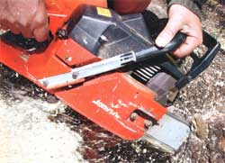

STEVE MAXWELL
A chainsaw blade up close. The teeth, known as cutters, bite into wood, while the depth gauges determine how deep the bite will be. Proper filing of both helps keep your chainsaw in good cutting condition. Center: Clamp your filing gauge in the middle of the bar, along the top edge, as shown above.